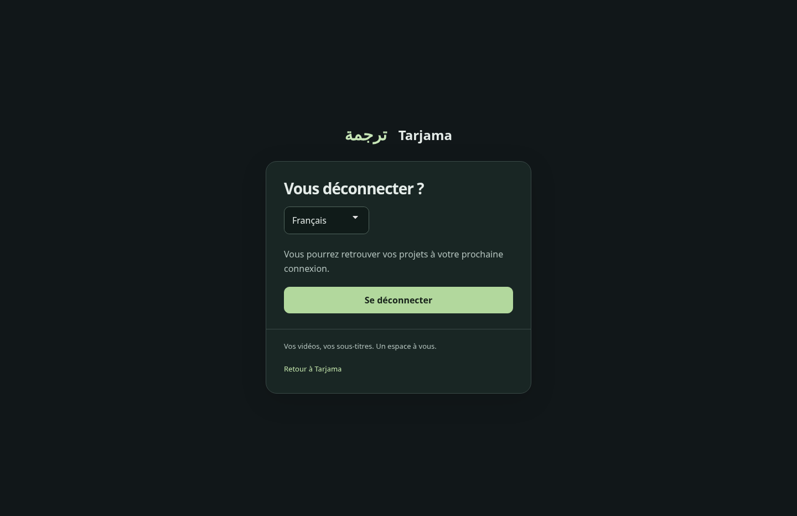
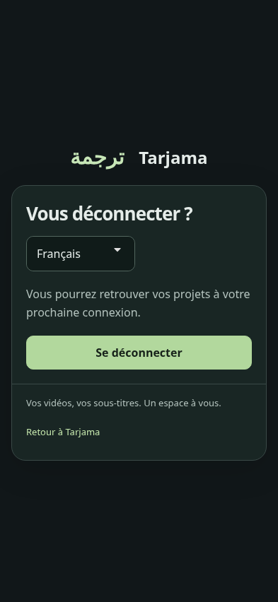
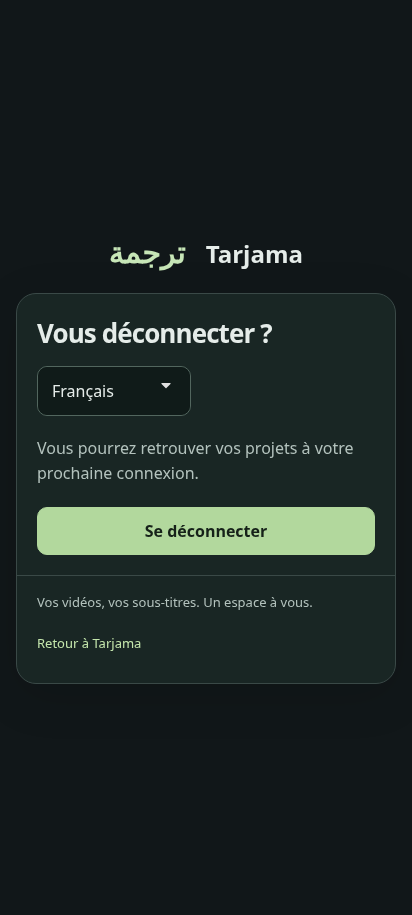
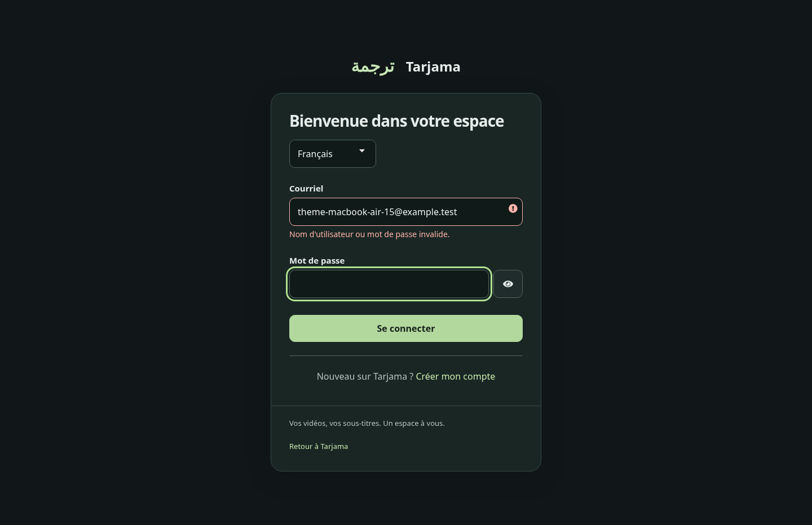
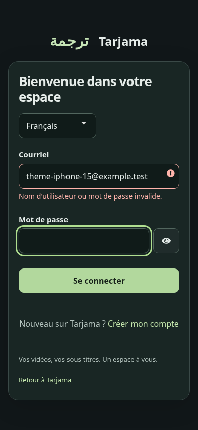
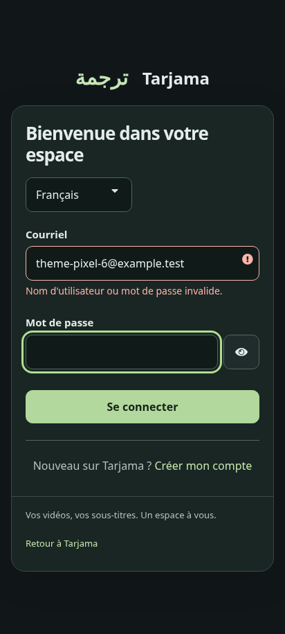
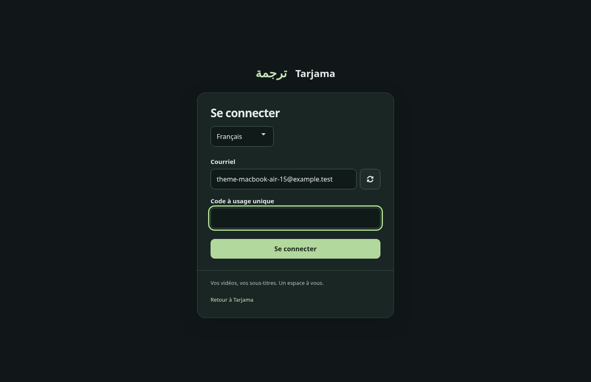
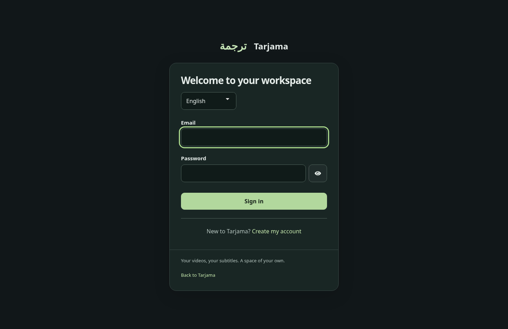

Aperçu du thème Keycloak candidat. Captures de vrais parcours de test isolés, avec des comptes fictifs. Aucun changement sur le site public.
Cliquer sur une image pour l’agrandir. Les formats iPhone et Pixel sont simulés sous Chromium ; ces captures ne constituent pas un test sur Safari ou un appareil physique.







